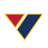

About
I am a Machine Learning Research Engineer at Woven Solutions, where I post-train image-generation and vision-language models with distillation and reinforcement learning. I am interested in foundation models for physiological signals — learning from sleep, EEG, and sensor data with little labeled supervision.
Previously, at UCLA and  Emory, I pre-trained foundation models for sleep and infant EEG. Before that I built an on-device RAG system at the Emory Admission, and graph neural networks for brain connectivity at UNC Greensboro.
Emory, I pre-trained foundation models for sleep and infant EEG. Before that I built an on-device RAG system at the Emory Admission, and graph neural networks for brain connectivity at UNC Greensboro.
Experience
Woven Solutions
Machine Learning Research Engineer · McLean, VA
UCLA & Emory University
Research Assistant · Sensor and EEG foundation models
Emory University · Office of Admission
AI Engineer · Atlanta, GA
Naval Information Warfare Center
Machine Learning Engineer Intern · U.S. Department of Defense · Guam
UNC Greensboro · GraLNA
Machine Learning Research Intern · NSF REU · Greensboro, NC
Publications
Google Scholar ↗IEEE ISBI 2025
Edge-Boosted Graph Learning for Functional Brain Connectivity Analysis
PECRC 2026 · Rapid-fire & poster
EEG Foundation Modeling for Early Prediction of Infant Motor Development
ICML 2026
On Pre-training and Scaling of Sleep Foundation Models
MIDL 2026
ConStruct: Structural Distillation of Foundation Models for Prototype-Based Weakly Supervised Histopathology Segmentation
IEEE ISBI 2026
IMACT-CXR: An Interactive Multi-Agent Conversational Tutoring System for Chest X-Ray Interpretation
Preprints & Under Review
Under review · NeurIPS 2026 BrainBodyFM
Infant-Adapted EEG Foundation Modeling for Developmental Status Classification in Infants Born Preterm
Preprint · 2025
DualProtoSeg: Simple and Efficient Design with Text- and Image-Guided Prototype Learning for Weakly Supervised Histopathology Image Segmentation
Preprint · 2025
Beyond the First Read: AI-Assisted Perceptual Error Detection in Chest Radiography Accounting for Interobserver Variability
Awards
Clinton Joiner Career Development Award
Best Research Rapid-Fire and Poster Presentation · 8th Annual Pediatric Early Career Researcher Conference, Children's Healthcare of Atlanta
NSF/CRA REU Travel Grant
Computing Research Association
Focus
- Research
- Foundation models · self-supervised learning · post-training with RL and distillation · vision-language models · graph neural networks
- Languages
- Python · SQL · Java · C++ · JavaScript / TypeScript · R · Bash
- Frameworks
- PyTorch · TensorFlow · scikit-learn · LangChain · FAISS · Neo4j · LoRA / PEFT · GRPO
- Infrastructure
- AWS · Azure AI Foundry · GCP · Docker · Linux · Git · Ollama